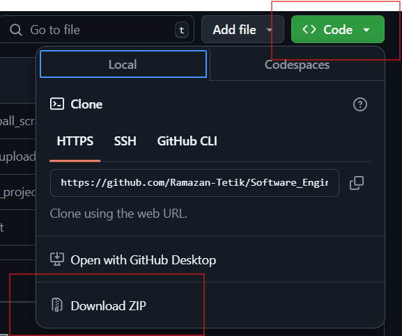
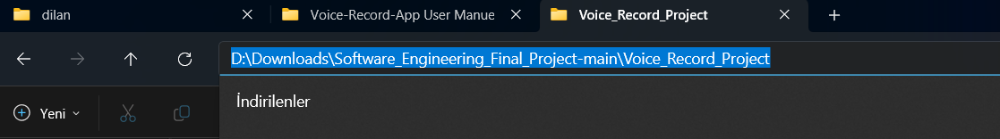
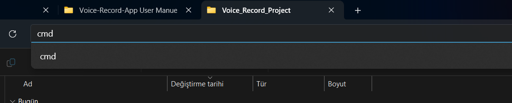
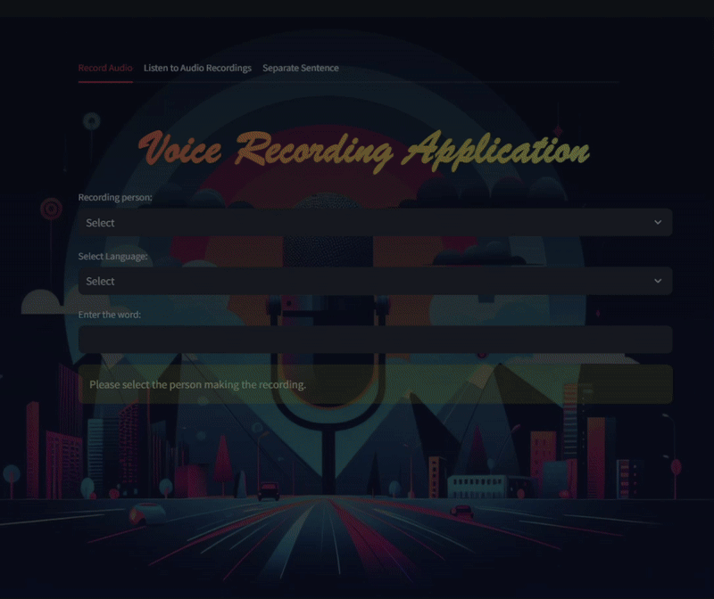

Voice Record Project: Simple Guide to Run the Application
1. Introduction
This document provides a comprehensive guide to using the Voice Record application, outlining its key features, setup process, and usage instructions. Whether you're a beginner or an advanced user, this manual will assist you in making the most of the application.
2. System Requirements
- Python (version 3.8 or higher).
- Operating System: Windows, macOS, or Linux.
- Required Libraries: Installed via the provided
requirements.txt file.
3. Installation Guide
Step 1: Download the Project
To download the project from GitHub:

- Visit the repository: Software Engineering Final Project.
- Click the green "Code" button and select "Download ZIP".
- Extract the downloaded ZIP file to a folder on your computer.
Step 2: Install Python
Ensure Python is installed on your computer:
Step 3: Install Necessary Libraries
Open the folder where you saved the project:


Installing the `sounddevice` Library
To install the sounddevice library in Python, follow the steps below:
-
Open the Command Prompt and check the Python installations available on your system using the following command:
where python
Example output:
C:\Users\dilan\anaconda3\python.exe
C:\Users\dilan\AppData\Local\Programs\Python\Python313\python.exe
-
Use the path to the desired Python executable to run the
pip install command. For instance:
C:\Users\dilan\AppData\Local\Programs\Python\Python310\python.exe -m pip install sounddevice
-
After running the command, you should see a message indicating that the
sounddevice library was successfully installed:
Successfully installed sounddevice-0.5.1
- Right-click inside the folder and choose “Open in Terminal” or open a terminal and navigate to the folder using:
cd .\Software_Engineering_Final_Project-main\Voice_Record_Project
- Type this command and press Enter:
pip install -r requirements.txt
This will install everything needed to run the project.
Step 4: Start the Project
- While still in the terminal, type this command and press Enter:
streamlit run app.py
- Wait for a few seconds. A browser window will open automatically showing the application.
That’s it! 🎉 You can now use the application to record, listen to, and manage audio. If you face any issues, double-check that Python and the required libraries are installed correctly.

4. User Interface Overview
The application consists of three main pages, each with unique functionality:
- Record Audio: This page allows users to record sound.
- Listen to Audio Recordings: This page lists and plays recorded audio files.
- Separate a Sentence: This page breaks a sentence into individual words and checks if recordings exist for each.
5. Features and Functionalities
- Interactive and Intuitive Design: Record, play, edit, and delete audio files seamlessly.
- Robust Data Management: Download filtered recordings and manage them efficiently.
- Error Prevention: Informative messages guide users to avoid errors.
6. Usage Instructions
1. Record Audio

- Select the Person:
- Choose a team member or select ‘Other’ and type your name.
- Choose Language:
- Pick either Turkish or English.
- Enter the Word:
- Type the word you want to record.
- Start Recording:
- Click ‘Start Recording’ to begin recording.
- Stop Recording:
- Click ‘Stop Recording’ to save the audio.
Important Notes:
- Recordings are limited to 5 seconds. If you exceed this time, the recording stops automatically without being saved.
- This page is designed for single-word recordings.
2. Listen to Audio Recordings

- Filter Data:
- Select the person and language to filter the recordings.
- View Details:
- Filtered recordings display the following:
- Word
- Audio File
- Creator’s Name
- Language
- Recording Date
- Edit or Delete Recordings:
- Use the ‘Edit’ button to update the word or language.
- Use the ‘Delete’ button to remove unwanted recordings.
- Download Data:
- Click ‘Download Filtered Recordings’ to save:
- A CSV file with metadata.
- A Recordings folder containing audio files.
Important Notes:
- If no recordings match the filter, a warning message is displayed.
- Cancel edits anytime using the ‘Cancel’ button.
3. Separate A Sentence

- Filter Data:
- Select the person and language.
- Enter a Sentence:
- Type a sentence, and the program will split it into words.
- Search for Words:
- The system checks for recordings of each word based on the filters.
- Play Words:
- Buttons are available to play recordings of each word individually.
Important Notes:
- If a word is not found, a warning message is displayed.
7. Troubleshooting and Maintenance
- Ensure Python and required libraries are correctly installed.
- If the application does not run, verify your
requirements.txt dependencies.
- Contact support for unresolved issues.
8. References